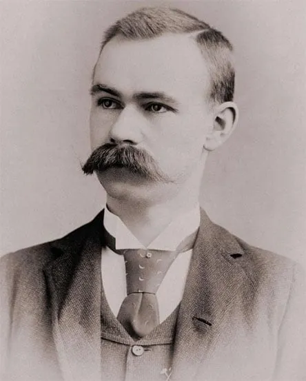
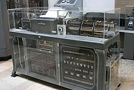
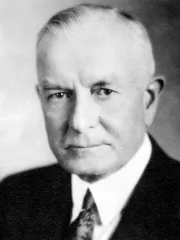
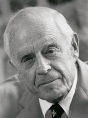

Entre 1880 e 1890, o estatístico Herman Hollerith (1860-1929), filho de imigrante alemão, inspirado nos cartões perfurados de Jacquard, usando cartolina especial, construiu um dispositivo que foi início das máquinas mecanográficas ou tabuladoras, que acelerou o processamento dos dados do censo dos EUA. Os dados eram perfurados em cartões e automaticamente tabulados usando máquinas projetadas. O censo anterior levou 7 anos e meio para ser concluído, Hollerith conseguiu realizar este senso em três anos e meio. Por causa disto, muitas organizações de grande porte começaram a usar a máquina. O nome de Hollerith continua associado ao cartão perfurado, que foi até o final da década de 80, símbolo quase universal do processamento automatizado de dados.

Durante a década de 1890, Hollerith saiu da Agência de Censo e fundou a empresa Tabulating Machine Company, que em 1924 junto a outras empresas formou a International Business Machines Corporations (IBM).


O primeiro Presidente da IBM foi Thomas J. Watson, (pai) e o seu sucessor foi Thomas J. Watson (filho). Watson criou como símbolo de sua empresa o lema THINK “Pensar”. Hoje essa companhia mantem um laboratório de pesquisas de ponta em computação que tem seu nome.
Thomas J. Watson, Pai (1874-1956)
Thomas J. Watson Jr. (1914–1993)


Por mais de um século, a IBM tem sido uma inovadora mundial em tecnologia, liderando os avanços em soluções tecnológicas com IA, automação e nuvem híbrida que ajudam as empresas a crescer. Podemos dizer que há um mundo antes, e um mundo após o surgimento da IBM.